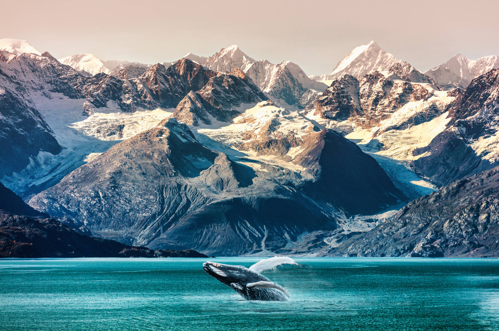

Alaska
Also known as the “Last Frontier,” Alaska is a state in the northwestern region of the United States. Alaska became a US state on January 3, 1959, making it the 49th official state. With a population of 732,673, Alaska is the largest state by area in the US. Alaska is nicknamed the “Last Frontier” due to the potential and opportunities yet to be uncovered in its large terrain. This state is both remote and isolated, full of unexplored wilderness and icy glaciers. The Last Frontier is also famous for its national parks, wildlife, tour cruises, and Northern Lights.